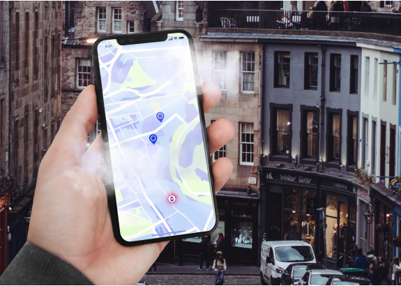
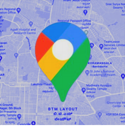
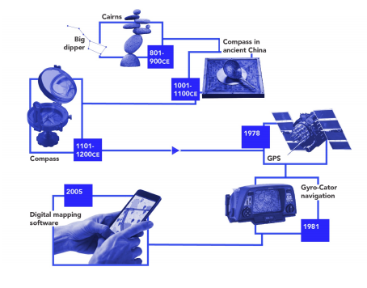
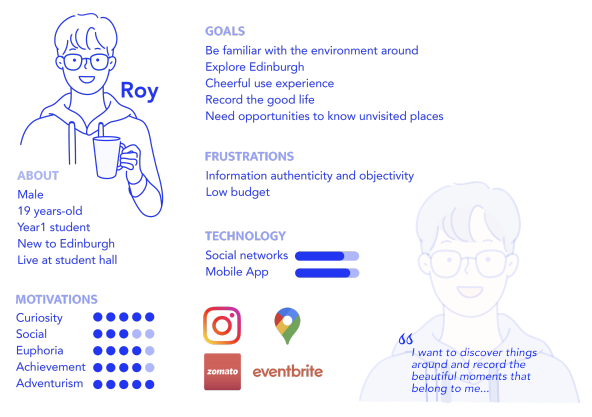
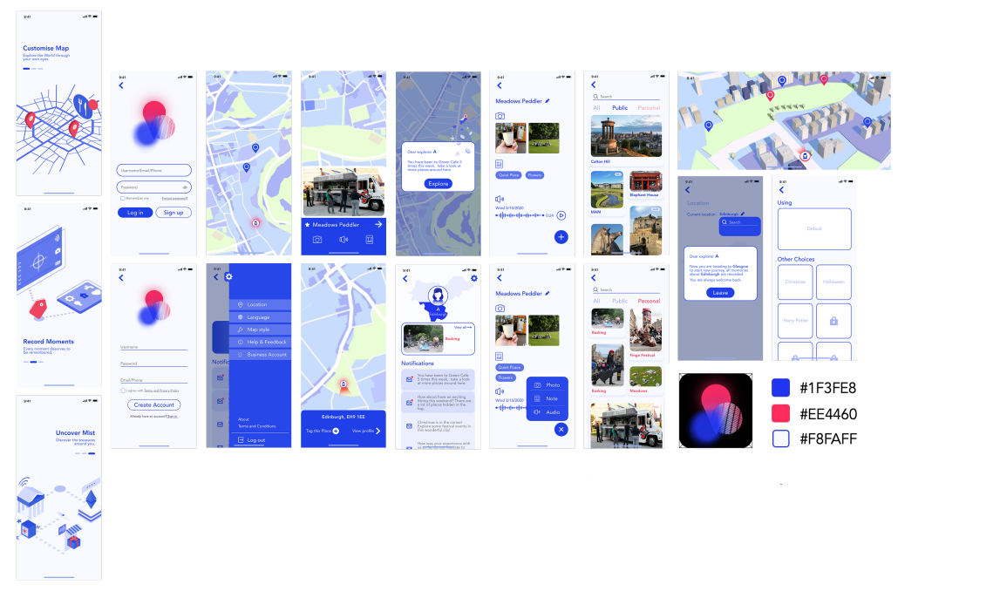

2021 / Interactive design
[Interactive Design] You Are Mapped by Digital Mappings!—— A Data-driven Mobile App Prototype for Surroundings Percept

Background
Nowadays, the digital map apps in people's cell phones have become one of the most indispensable tools in our daily life. With the improvement of data collection and operational capabilities, digital maps are no longer just a map on the phone. AI navigation, store and spot recommendations……more and more additional services are embedded into the digital map apps and benefit users for a convenient experience.
However, some expressed deep misgivings about such a seemingly perfect tool. Some news commentators argued that the information presented or hidden by these digital maps is alarming. The tech giants have built a world of digital maps with filters that strive to recommend the choices of the "majorities", or the way that capitalists hope.
Looking at the shops, roads, and landmarks carefully laid out like a chessboard on a Google map creates make-believe feel to the Matrix. As the users, we deeply believe that we can ascertain every corner of the world from the small handy machine, we can know the specific number and location of surrounding supermarkets, cinemas, and parks, we have clear idea of the nearby landmarks and main streets even if you have just arrived in the city. However, when you completely have no doubt about the various weighted information displayed on the screen, affirming it is detailed and objective enough, you have become a puppet dominated by invisible big data algorithms. You may find you can't move a step and feel unacquainted with this seemingly familiar city when you choose to turn off the electronic map. To some extent, you have lost the habit of using your feet and eyes to understand your surroundings.
The concern engenders the idea of our design: exploring the relationship and impact between maps and people in the era of big data and solve the issue through a data-driven interaction design.

Discussion
1. Map
From the great sailing ships era to World Wars, to the digital age, and then to the Present —— the era of Big Data, the impact of maps on people has undergone earth-shaking changes. After our research, we believe that the biggest beneficiary and the orientation of benefit have always been the cartographer of the map, although the broad stakeholders of digital map products are consumers today. The cartographic right of the map once represented the power to explore the world, the dominance of war, and the technological hegemony. Today, it represents the right of collection and usage with location-based information, and even the right to interpret the spatial environment.

A sea of behavioral information and location-based services reveal the problem of capitalist surveillance, which makes the intention behind the filtered-display information become a question: How much information displayed on the map is directly or indirectly considered by capital interests? Regardless of the answer, users have furtively lost the right to choose while they are enjoying the convenience from the numerous digital map services.
2. People and Community
People have blind obedience to service that they rely on in a period, beginning with trusting the information provided by services and giving up independent opinion. This is especially evident in the usage of digital maps. Nowadays, when people ask for direction, they rely directly more on navigation applications and follow virtual instructions to their destination, instead of asking passers-by to find the way like more than a decade ago. Although this change has improved the efficiency of pathfinding, it has greatly reduced people's perception of the environment because users spend too much attention on interaction with mobile phones, which results that people are often familiar with some routes they are used to, but they don't know anything about another route that is very close but is not the shortest route judged by navigation. It is even difficult for people to recognize what shops and the daily conditions there are on the roadside they pass every day. Biological studies have shown that when a person is constructing a spatial map, the hippocampus in the brain is in a "highly active" state. Long-term reliance on electronic maps can lead to biological degradation and loss of environmental awareness.
The value of the space environment to people is not only in the grasp of location but also in the emotional resonance between people and the specific environment. Impressive shops, unique restaurants, pleasant natural scenes... These places valued by different individuals are the deepest understanding and perception of the environment. This perception drives people's self-identity in an environment and creates a sense of happiness in people's lives. With the extensive use of the recommendation system driven by big data, people begin to blindly follow the choices provided by AI algorithms which affect people's views on things by artificial criteria. This is undoubtedly hard to detect and terrifying. What people need should be a way to motivate them to build connections with the surroundings and be constantly engaged to bolster their understanding of the environment.
When the spatial environment builds a solid bond with the people in it, the people will become part of the environment and will further interact with others. Street performers, self-employed craftsmen, or food trucks will develop into cultural carriers, conducting the common memory of the community. These cultural "name cards" have inestimable regional value and continue to build well-being for the community.
Ideation
Persona
We shaped the persona upon our initiation.

We then made a data-driven mobile app "Misty" using proper gamified elements to engage people to explore and define the surrounding by themselves. Moreover, the app also contributes to the local self-employed individuals and performers with the demand for real-time location services. You can find the demo video from https://16096389d.wixsite.com/website/videos
Feature 1: capture and audio recording
The user can directly collect the images and audio from any scenario, write annotations and store the spot as a tag. The tags will compose the description of each location on his map. This function allows users to build their own maps and record their own memories and values. As records and explorations increase, badges and decorative rewards will be given to motivate users to continue exploring.
Feature 2: the floating fog
The "fog" feature presents the user's exploring history in an area. The map will be fully covered with "fog" when there is no explored area in the district. When the user exploring the surrounding, the "fog" covered on the map will gradually disperse based on the real-time location. Besides, in order to motivate people to explore the area they are not familiar with, they can receive a time-limit view of an "unexplored" area by blowing to the mic on their phone, Random spots will be provided with motion design to drive the intrinsic motivation of the user to go deep into the area.
Feature 3: public exposure
For local self-employed individuals and performers with the demand for real-time location services, they can share their real-time location and get other users to subscribe to them. Other users can view simple text notices from them and see the public accounts in a range on a map. However, they cannot see any information about public businesses in unexplored areas. When the fog is blown away, users can see random businesses popping up, which is used to drive users to explore unknown areas.
